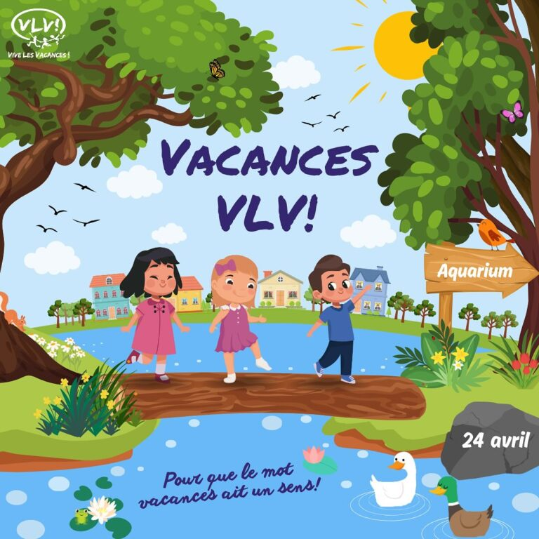
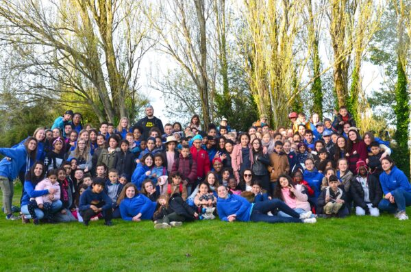
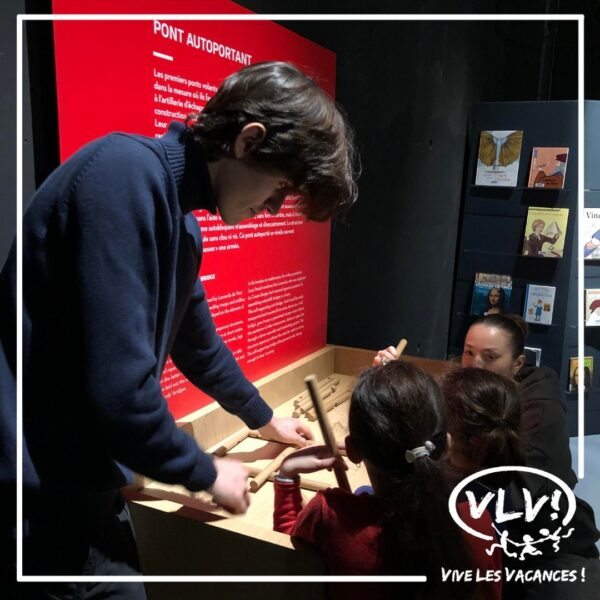
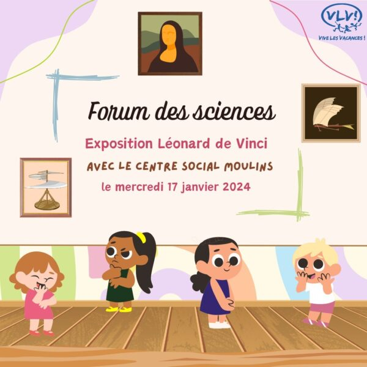
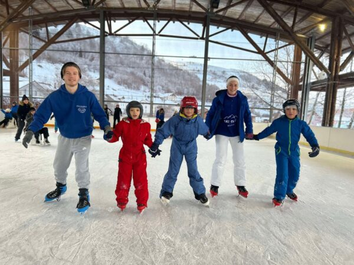
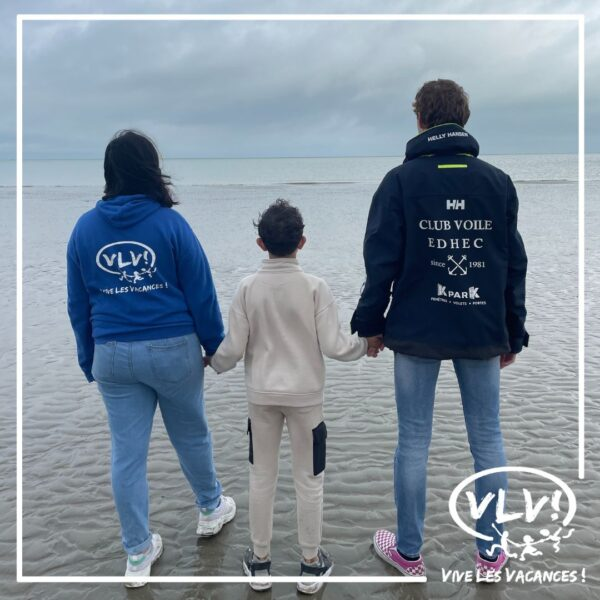

Découvrez comment Vive Les Vacances agit au quotidien pour les enfants de la MEL


Depuis 1993, Vive les Vacances! organise de A à Z une semaine de vacances pour 100 enfants issus des milieux sociaux défavorisés de la MEL, cette semaine est réalisés au mois d'avril, dont la destination change chaque année. Au programme : ateliers découverte, sorties, activités sportives et culturelles, grands jeux, veillées et pièce de théâtre jouée par les bénévoles qui constituent l'imaginaire de la semaine.


Tous les jours, nos bénévoles se déplacent dans chacun des 7 centres sociaux de Lille et de Roubaix avec lesquels nous travaillons pour accompagner les enfants dans leur scolarité : une aide aux devoirs, des modules d'apprentissage, ainsi que des activités ludo-éducatives sont au programme, et ce, du primaire au collège.


Deux mercredis par mois, nos bénévoles organisent pour les enfants des centres sociaux des sorties culturelles ou sportives pour les éveiller aux activités que leur offre leur région. Visite d'une ferme pédagogique, après-midi course d'orientation ou encore découverte du Musée d'Histoire Naturelle ont été notamment organisées cette année. Des « Big Suivis » ponctuent également l'année.


Le projet Mini-JO est une journée de compétition sportive organisée pour des enfants âgés de 8 à 12 ans, en partenariat avec l'association de l'EDHEC OJO. L'objectif est de leur faire découvrir la pratique du sport sous un autre jour en insistant sur les valeurs qu'il véhicule et les sensibiliser à des sujets tels que le handicap et l'écologie. En 2024, la 7ème édition a rassemblé près de 100 enfants.


Depuis 2015, VLV! emmène chaque année 40 enfants découvrir les joies de la montagne : un voyage loin de leur quotidien ! Ces quatre journées ont pour but d'offrir à ces enfants issus de milieux défavorisés l'opportunité de s'évader et de découvrir les joies du ski.


En octobre 2023, les enfants ont découvert les richesses de la voile en naviguant à Dunkerque. Une journée complète en extérieur ayant pour but de les initier au monde de la voile.